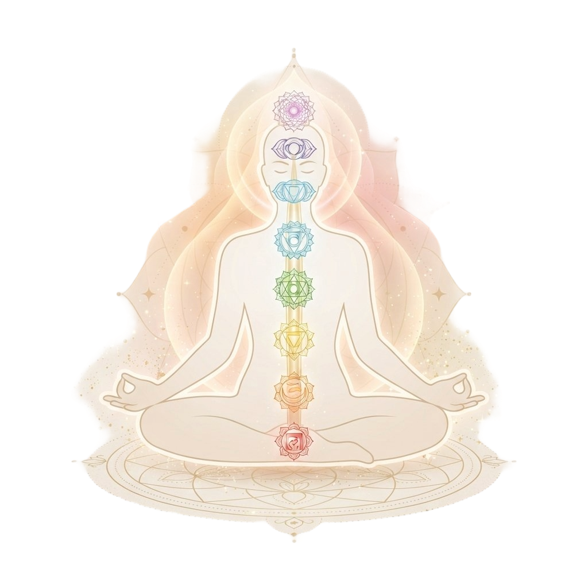
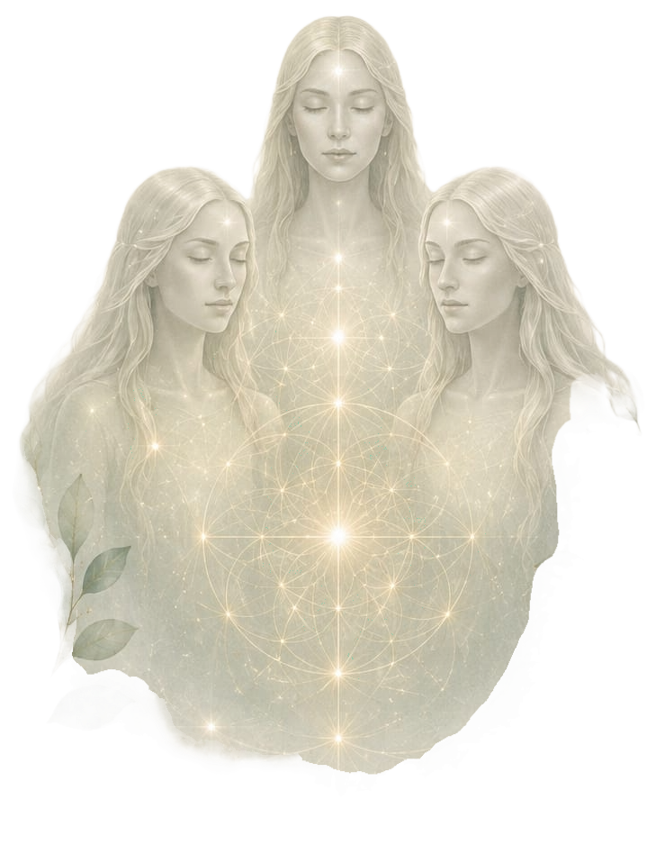
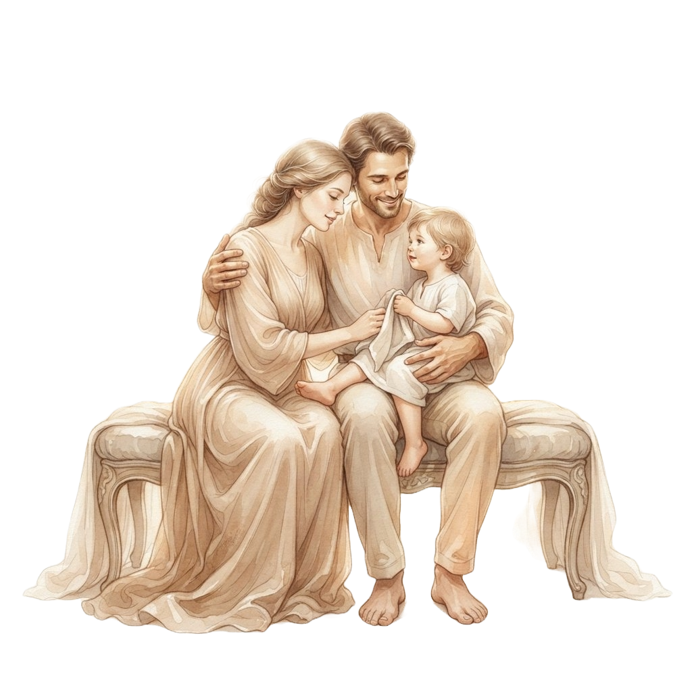

CONCIENCIA
Y
AMOR DE 2
Espacios terapéuticos y holísticos diseñados para acompañar tu proceso de sanación, autoconocimiento y conexión interior.

Servicios orientados al crecimiento personal, la sanación y el autoconocimiento.
Una herramienta de autoconocimiento y guía para comprender tu momento presente, identificar bloqueos y tomar decisiones alineadas con tu alma.
ConsultarConexión con la sabiduría de tu alma para sanar patrones kármicos, comprender tu propósito de vida y acelerar tu evolución espiritual.
ConsultarTerapia sistémica para identificar bloqueos heredados, ordenar el sistema familiar, liberar cargas transgeneracionales y tomar la fuerza de tus ancestros.
ConsultarSesiones y audioguías diseñadas a tu medida para conectar con el silencio interior, calmar la mente y gestionar emociones intensas.
ConsultarTécnica de enfoque mental profundo para reprogramar creencias limitantes, fortalecer la autoestima y cultivar el hábito de la calma.
ConsultarTécnica de trance profundo diseñada para conectar con vidas pasadas, identificar y sanar patrones inconscientes, y facilitar la elevación de la conciencia.
Consultar
Espacios vivenciales para compartir, aprender y conectar con otras personas.
Encuentros sagrados y amorosos donde compartimos experiencias, sostenemos nuestros procesos y sanamos en tribu reconectando con lo femenino.
ConsultarDinámicas grupales e intuitivas para expandir la percepción sensorial, potenciar la conexión mente a mente y explorar capacidades latentes.
ConsultarJornadas grupales enfocadas en amor propio, manejo de emociones, espiritualidad práctica y rituales para marcar nuevos inicios.
Consultar
Procesos terapéuticos enfocados en fortalecer las relaciones familiares y el bienestar emocional.
Episodios y reflexiones diseñadas para sembrar conciencia en el hogar, acompañar la crianza con amor y sanar desde la escucha consciente.
Espacios de orientación para padres y cuidadores centrados en herramientas de comunicación asertiva, empatía y resolución de conflictos.
ConsultarAcompañamiento integrativo para restaurar la armonía del hogar, comprender las dinámicas relacionales y fortalecer la unión consciente.
ConsultarEspacio seguro, libre de juicios, para que los jóvenes puedan expresar sus inquietudes, gestionar la presión social y construir su identidad.
ConsultarProcesos dirigidos a sanar el niño o niña interior, soltar mandatos familiares inconscientes y reconciliarse con las raíces familiares.
ConsultarSesiones donde el ritmo, la frecuencia y la sonoridad se convierten en canales de expresión emocional e integración familiar.
Consultar